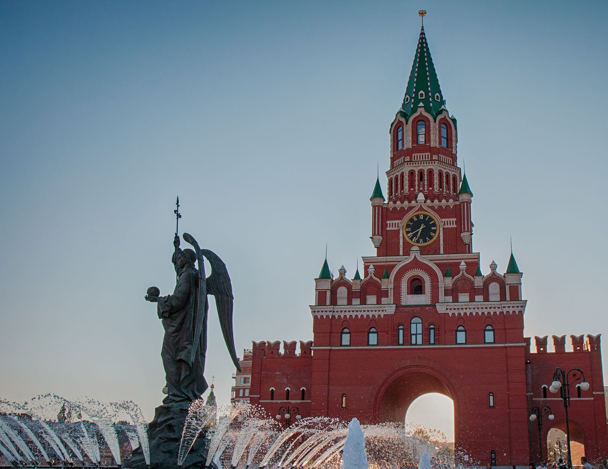

«Времени нет» — философская выставка о времени
Современное искусство из Казани, Москвы, США и Индии
Узнать большеДобро пожаловать!
Культурно‑выставочный центр «Башня» приглашает вас в мир искусства и культуры в самом сердце Йошкар-Олы!
Узнать больше
